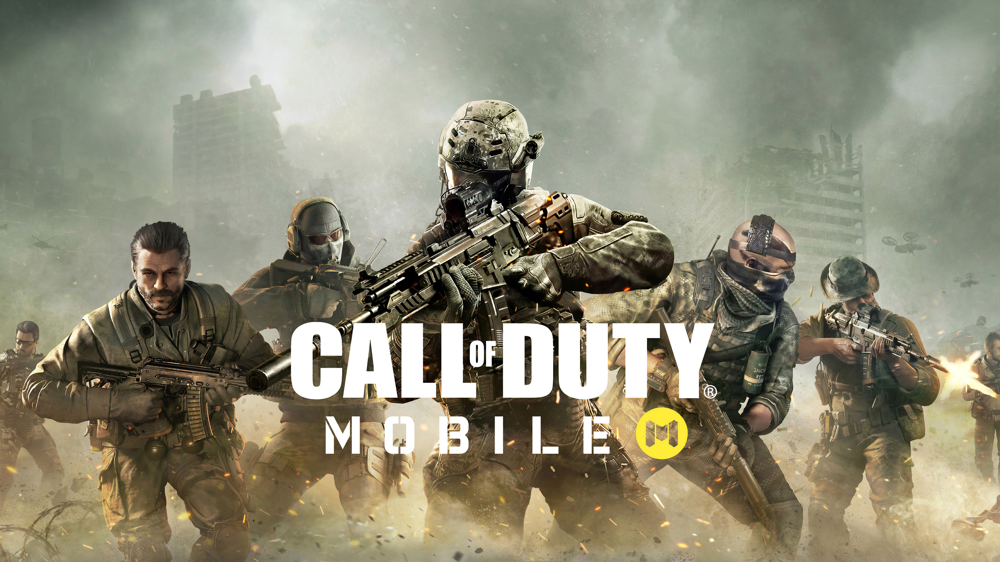

Nouvelle Vidéo de Call of Duty
Marshal No Commentary

Throneful
MKIceAndFire

Guide Complet pour Progresser dans Call of Duty
1. Introduction au Jeu
a. Choix du Jeu
Modes de Jeu : Les jeux Call of Duty proposent plusieurs modes comme le multijoueur, le mode campagne, et le mode battle royale (ex. : Warzone).
Configuration de la Partie : Choisissez des réglages qui conviennent à votre style de jeu, comme le type de matchmaking et les paramètres de difficulté.
b. Compréhension des Mécaniques de Jeu
Contrôles : Familiarisez-vous avec les commandes de base et les mouvements spécifiques (saut, accroupi, etc.).
Interface Utilisateur : Apprenez à lire les éléments de l'interface comme la mini-carte, les objectifs, et les indicateurs de santé.
2. Conseils pour le Mode Multijoueur
a. Cartes et Environnements
Connaître les Cartes : Apprenez les configurations des cartes, les points chauds, et les endroits pour l'embuscade.
Utiliser le Couvert : Profitez des structures et des objets dans l’environnement pour vous protéger et vous repositionner.
b. Armes et Équipement
Choix des Armes : Testez différentes armes pour trouver celles qui correspondent à votre style de jeu (assaut, sniper, mitrailleuse, etc.).
Accessoires et Attachements : Équipez vos armes avec des accessoires qui améliorent leur précision, leur portée, et leur efficacité.
Killstreaks et Scorestreaks : Utilisez ces bonus pour obtenir des avantages temporaires, comme des drones de reconnaissance ou des frappes aériennes.
c. Stratégies et Techniques
Jeu d’Équipe : Travaillez avec vos coéquipiers pour capturer des objectifs et coordonner des attaques.
Positionnement : Évitez de rester dans des zones ouvertes; utilisez des angles et des couverts pour minimiser les risques.
Utilisation des Grenades : Lancez des grenades pour déloger les ennemis ou les blesser avant d'attaquer.
3. Conseils pour le Mode Campagne
a. Objectifs et Missions
Suivi des Objectifs : Suivez les objectifs de la mission pour progresser efficacement.
Exploration : Explorez les environnements pour trouver des secrets et des objets de collection.
b. Gestion des Ressources
Munition et Santé : Utilisez les ressources disponibles de manière stratégique; ne gaspillez pas de munitions.
Équipement Spécial : Profitez des armes et équipements spéciaux que vous rencontrez pendant les missions.
c. Combat et Tactiques
Utilisation des Couvertures : Adoptez une approche tactique en utilisant des couvertures et en évitant les zones ouvertes.
Difficulté : Adaptez la difficulté en fonction de votre niveau de compétence pour profiter du défi sans vous décourager.
4. Conseils pour le Mode Battle Royale (ex. : Warzone)
a. Début de Partie
Atterrissage : Choisissez un endroit stratégique pour atterrir, avec suffisamment de ressources et de couvert.
Collecte de Loot : Recherchez des armes, armures, et objets de soins dès que possible.
b. Survie et Stratégie
Gestion de la Zone : Déplacez-vous en fonction de la zone de jeu et évitez les zones dangereuses.
Engagement des Ennemis : Choisissez vos combats avec soin; engagez les ennemis quand vous avez l’avantage.
c. Équipe et Communication
Coordination : Communiquez avec vos coéquipiers pour planifier des stratégies et partager des informations.
Ressources d’Équipe : Assurez-vous de partager des ressources importantes comme des armures et des munitions.
5. Optimisation des Performances
a. Réglages et Configuration
Sensibilité de la Souris/Manette : Ajustez la sensibilité pour un meilleur contrôle des mouvements.
Paramètres Graphiques : Optimisez les paramètres graphiques pour un meilleur équilibre entre performance et qualité visuelle.
b. Pratique et Entraînement
Mode Entraînement : Utilisez les modes d’entraînement pour améliorer vos compétences en visée et en mouvement.
Analyse de Gameplay : Regardez des replays et des vidéos pour analyser vos erreurs et apprendre de nouvelles techniques.
6. Stratégies Avancées
a. Analyse des Ennemis
Comportement des Ennemis : Étudiez les patterns de comportement des ennemis pour anticiper leurs actions.
Exploitation des Faiblesses : Identifiez et exploitez les faiblesses dans la stratégie des ennemis.
b. Adaptation et Flexibilité
Changement de Stratégie : Soyez prêt à changer de stratégie en fonction des circonstances de la partie.
Utilisation des Équipements : Expérimentez avec différents équipements et ajustez votre style de jeu en conséquence.
7. Ressources et Communauté
a. Ressources en Ligne
Guides et Tutoriels : Consultez des guides détaillés et des tutoriels pour des conseils sur des aspects spécifiques du jeu.
Vidéos de Gameplay : Regardez des vidéos de joueurs professionnels pour apprendre des stratégies avancées et des astuces.
b. Communauté
Forums et Réseaux Sociaux : Participez à des forums et des groupes en ligne pour échanger des conseils et des stratégies avec d’autres joueurs.
Événements et Tournois : Participez à des événements et à des tournois pour tester vos compétences contre d'autres joueurs et améliorer votre jeu.